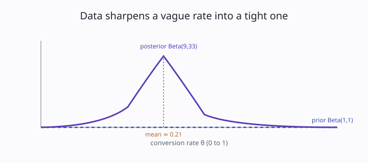

Track 2: Core toolkit
You have successes out of trials and want the whole distribution of the underlying rate, not just the fraction. How do you get there with arithmetic instead of an integral?

A landing-page variant gets 8 signups from 40 visitors. Reporting "20% conversion" throws away how shaky 40 visitors is. The Beta-Binomial keeps the whole curve, so you can see the rate is plausibly anywhere from 11% to 33%, which changes whether you would bet the quarter's roadmap on it.
The prior is a lump of clay shaped like your starting belief about the rate. Each visitor who converts presses the clay toward higher rates, each who bounces presses it toward lower; the more visitors, the firmer and narrower the final shape.
Keep the observed rate at 20% but change the sample from 8/40 to 80/400. Predict what happens to the width of the posterior before you compute the new Beta parameters.
A rate θ between 0 and 1 deserves a distribution that lives on [0, 1]. The Beta family does exactly that, with two shape parameters you can read as pseudo-counts: Beta(a, b) behaves like having already seen a−1 successes and b−1 failures. Its mean is a/(a+b).
Binomial data of s successes in n trials updates it by addition, the defining feature of conjugacy:
Beta(a, b) → Beta(a + s, b + n − s).
Successes add to the first parameter, failures (n − s) add to the second. With a flat prior Beta(1,1) and data 8/40, the posterior is Beta(9, 33), mean 9/42 ≈ 0.214. This is the model that powers most conversion-rate work and feeds directly into credible intervals.
Starting from Beta(2, 2), you observe 5 successes in 12 trials. What is the posterior?
Beta(7, 12)Beta(7, 9)Beta(5, 7)Beta(7, 14)Correct: add successes to a (2+5=7) and failures n−s = 12−5 = 7 to b (2+7=9), giving Beta(7, 9). The tempting Beta(7, 12) adds the trial count n to b instead of the failure count; that is the most common slip and it inflates the apparent failures.
On an experimentation dashboard, each A/B arm shows a conversion rate and a wide error bar early in the test. The Beta-Binomial posterior is what those bars should be: with 8/40 the arm's rate is barely pinned down, so a PM pushing to ship on day two is reading noise. The same posterior at 800/4000 is tight enough to act on.
The pseudo-count reading holds only while each trial is independent and identically distributed. If conversions cluster (one referral source sends ten visitors who all convert), the effective sample is smaller than n and the posterior is narrower than the data justifies.
What is the rate, with its uncertainty, from s of n?
Add successes and failures onto a Beta's two counts.
Two shape parameters read as pseudo-counts.
a: prior successes +1b: prior failures +1Beta(a,b) → Beta(a+s, b+n−s)
a/(a+b)n−s, not nFlat prior, 8 of 40 convert.
Beta(1,1) → Beta(9,33)9/42 ≈ 0.21Correlated or non-stationary trials.
A conversion rate is a number between zero and one, so its belief should be a curve on that range, and the Beta distribution is the natural shape. Its two parameters act like counts of successes and failures you have already seen. New data updates it by plain addition: successes raise the first count, failures raise the second. With only 40 visitors the curve is wide, so the rate is uncertain; with 4000 it tightens around the same center. The trick stops working when visitors are not independent, because then your real sample is smaller than the count suggests.
Treat the 12 sales as an update to what you already believed: the prior counts stay in the posterior, and the new successes and failures add to them.
Before reporting the posterior mean, stress the prior: rerun the update from Beta(1,1) and from a skeptical Beta(2,20), and say whether the shipping decision changes.
n−s rather than n to b matter, and what error does the wrong version produce?Beta(1,1) say about the rate before any data?Take a real conversion log (or last week's), pick a defensible prior, compute the posterior Beta parameters, and report the posterior mean. Then split the data in half and show the posterior is wider on each half than on the whole.
Prior Beta(1,1), data 8 successes in 40 trials. Successes: 1+8=9. Failures: 1 + (40−8) = 1+32 = 33. Posterior Beta(9, 33), mean 9/42 ≈ 0.214.
Prior Beta(3, 7) (a weak belief the rate is near 30%), data 15 successes in 50 trials. Fill the blanks: a' = 3 + ___ = ___; failures 50 − 15 = ___, so b' = 7 + ___ = ___; posterior Beta(___, ___), mean ___.
a' = 3+15 = 18; failures = 35, so b' = 7+35 = 42; posterior Beta(18, 42), mean 18/60 = 0.30. The prior and data agreed, so the mean held near 0.30 and the curve tightened.
Prior Beta(2, 8), data 30 successes in 100 trials. Give the posterior Beta parameters and the posterior mean.
Model answer: Beta(2+30, 8+70) = Beta(32, 78), mean 32/110 ≈ 0.291. The 100 trials pulled the prior mean of 0.2 up toward the data's 0.3.
Original case: one landing page, successes out of visitors. Changed surface: a dice-fairness check where you count how often a die shows six in 60 rolls and want the posterior over P(six). The invariant is the Beta-Binomial update; the broken assumption is that the success probability is unknown and free, since here you have a strong prior that a fair die gives 1/6. Pick a prior that encodes "probably fair", update on 14 sixes in 60, and say whether the data should worry you.
Rubric: full credit picks an informative prior centered near 1/6 (e.g. Beta(10, 50)), updates to Beta(24, 96) mean 0.20, and notes the posterior shifted above 1/6 but the informative prior keeps the evidence from being conclusive on 60 rolls.
Build a function that turns prior parameters plus (successes, trials) into a posterior Beta and its mean, and run it on a real proportion from your own data.
a2, b2 = a + s, b + (n − s) and mean = a2/(a2+b2).(s+1)/(n+2).Beta(9, 33) mean 0.214 from Beta(1,1) and 8/40.You have it when your function returns Beta(9, 33) for the anchor case and your posterior mean for your own data matches (a+s)/(a+b+n) by hand.
Push further: add a function that draws 10,000 samples from the posterior and confirm their average lands within 0.01 of the closed-form mean.
| Criterion | Pass | Weak |
|---|---|---|
| Failure count | uses n−s for b | adds n to b |
| Anchor reproduced | returns Beta(9,33) | off by the failure-count slip |
| Width intuition | posterior narrows as n grows | treats 8/40 and 80/400 as identical |
Pass threshold: all three rows pass on your own dataset, not just the anchor.
Weak answer example: "Posterior is Beta(9, 40)." That used the trial count as the failure count, the exact trap this module flags.
If you miss the failure-count row, do this first: label your two counts "successes" and "non-successes" out loud and re-run the 8/40 case until you get Beta(9, 33).
Pick one proportion you actually report (a conversion rate, a pass rate, an error rate), state a prior you can defend, compute the posterior Beta, and write one sentence a stakeholder could act on, including how uncertain the rate still is.
| Criterion | Pass | Weak |
|---|---|---|
| Defensible prior | states a reason for a, b | uses Beta(1,1) with no thought |
| Correct update | failures use n−s | trial count in the failure slot |
| Uncertainty stated | reports the rate is shaky on small n | reports a point with no spread |
Pass threshold: a stakeholder can tell from your sentence whether the rate is solid or still noisy.
Weak answer example: "Conversion is 20%, ship it" from 8/40, no spread reported.
If you miss the uncertainty row, do this first: compute the posterior on 8/40 and on 80/400 and compare how wide each is before reporting.
Reason about why the update behaves as it does.
Two arms both show observed rate 0.20: arm A from 8/40, arm B from 80/400. Why is arm B's posterior narrower?
a+b grows.Correct: the Beta's spread falls as a+b rises, and arm B contributes 400 trials of pseudo-counts. The "same width" answer confuses the mean (equal here) with the spread (very different); equal means with different sample sizes carry different certainty.
You update Beta(1,1) with 8 of 40 and a colleague writes the posterior as Beta(9, 40). What did they do wrong, and what is the effect?
Beta(9, 40) is correct.b instead of the failure count 32, which pushes the posterior mean too low, to 0.18 instead of 0.21.Correct: b takes the failures n−s = 32, giving Beta(9, 33) mean 0.214; using 40 gives Beta(9, 40) mean 0.18, biased low. The "nothing wrong" answer is the trap this module exists to break.
What does the prior Beta(1, 1) express about the rate before data?
Beta(1,1) is the uniform distribution.Correct: Beta(1,1) is flat, so it treats all rates as equally likely, the standard weak prior. The "almost certainly 0.5" answer confuses a flat prior with one peaked at the midpoint; flat means no preference at all.
Why does conjugacy make the Beta-Binomial update "arithmetic instead of an integral"?
Correct: conjugacy means prior and posterior share a family, collapsing the update to parameter addition. The "prior is ignored" answer is wrong because the prior's a and b sit directly in the posterior; it is combined, not discarded.
Conversions cluster because one referral source sent ten visitors who all signed up. How does that break the Beta-Binomial reading?
n and the posterior is narrower than the data justifies.Correct: the model assumes i.i.d. trials; clustering inflates apparent information, so the curve looks more certain than it should. The "counts are counts" answer ignores that correlated successes carry less independent evidence than the raw n suggests.